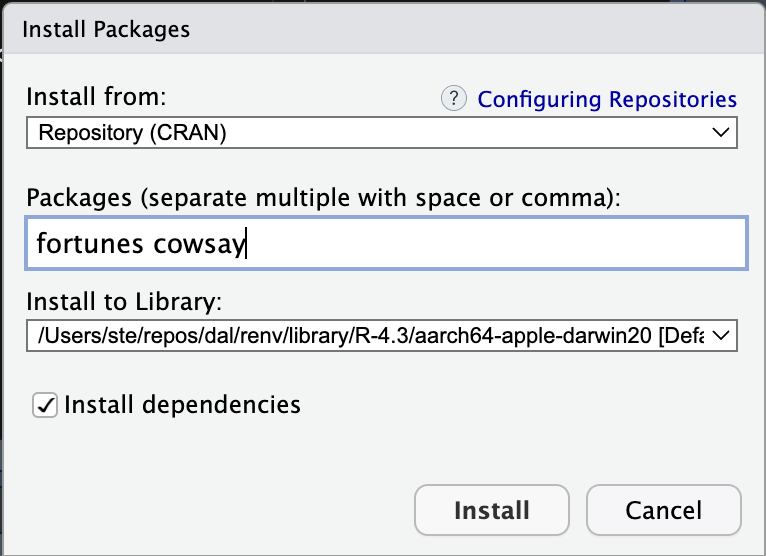

library(cowsay)
library(fortunes)R packages
Learn how to add functionality to R with packages
1 R packages
When you install R, a library of packages is also installed. Packages provide R with extra functionalities, usually by making extra functions available for use. You can think of packages as “plug-ins” that you install once and then you can “activate” them when you need them. The library installed with R contains a set of packages that are collectively known as the base R packages, but you can install more any time!
Note that the R library is a folder on your computer. Packages are not installed inside RStudio. Remember that RStudio is just an interface.
You can check all of the currently installed packages in the bottom-right panel of RStudio, in the Packages tab. There you can also install new packages.
1.0.1 Install packages
You can install extra packages in the R library in two ways:
- You can use the
install.packages()function. This function takes the name of the package you want to install as a string, for exampleinstall.packages("cowsay").
- Or you can go the
Packagestab in the bottom-right panel of RStudio and click onInstall. A small window will pop up. See the screenshot below.

Go ahead and try to install a package using the second method. Install the cowsay and the fortunes packages (see picture above for how to write the packages). After installing you will see that the package fortunes is listed in the Packages tab.
1.0.2 Attach packages
Now, to use a package you need to attach the package to the current R session with the library() function. Attaching a package makes the functions that come with the package available to us.
Let’s attach the cowsay and fortunes packages. Write the following code at the top of your R script, before all the other code you wrote.
Note that library(cowsay) takes the name of the package without quotes, although if you put the name in quotes it also works. You need one library() function per package (there are other ways, but we will stick with this one).
Now you can use the functions provided by the attached packages. Try out the say() function from the cowsay package.
Write the following in your R script and run it!
say("hot diggity", "frog")(I know, the usefulness of the package might be questionable, but it is fun!)
Warning
Remember, you need to install a package only once but you need to attach it with library() every time you start R.
Think of install.packages() as mounting a light bulb (installing the package) and library() as the light switch (attaching the package).

1.1 Package documentation
To learn what a function does, you can check its documentation by typing in the Console the function name preceded by a ? question mark. Type ?say in the Console and hit ENTER to see the function documentation. You should see something like this:
The Description section is usually a brief explanation of what the function does.
In the Usage section, the usage of the function is shown by showing which arguments the function has and which default values (if any) each argument has. When the argument does not have a default value, NULL is listed as the value.
The Arguments section gives a thorough explanation of each function argument. (Ignore … for now).
How many arguments does say() have? How many arguments have a default value?
Default argument values allow you to use the function without specifying those arguments. Just write say() in your script on a new line and run it. Does the output make sense based on the Usage section of the documentation?
The rest of the function documentation usually has further details, which are followed by Examples. It is always a good idea to look at the example and test them in the Console when learning new functions.